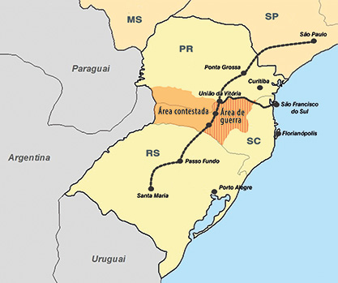
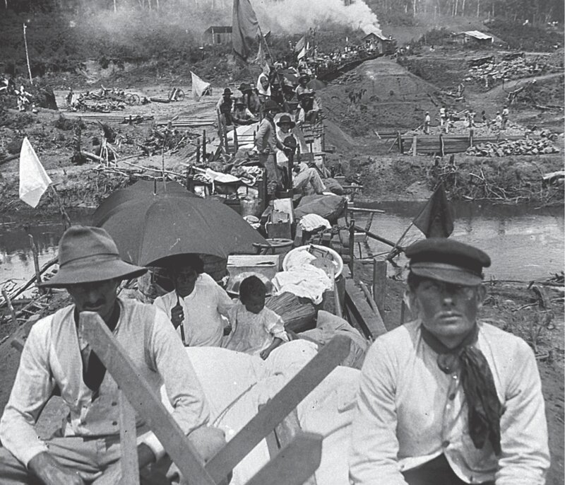
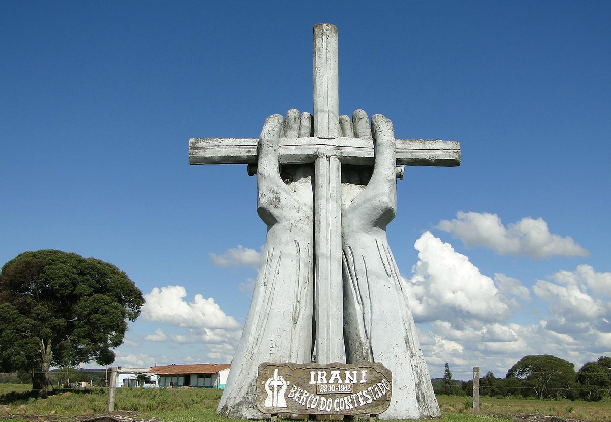

A Guerra do Contestado: o que é
A Guerra do Contestado foi uma disputa de terras do Paraná e Santa Catarina, que expulsou famílias e suas propriedades para construir uma ferrovia. Era liderado pelo Monge José Maria, quem também iremos falar. Envolve principalmente a cultura do Paraná.

Como começou:
A Guerra do Contestado (1912–1916) ocorreu na região de fronteira entre o Paraná e Santa Catarina. O conflito foi causado pela disputa de terras, pela construção da ferrovia e pela expulsão de muitas famílias de suas propriedades. Além disso, milhares de trabalhadores ficaram desempregados após o fim da obra da ferrovia. Os caboclos, liderados pelo monge José Maria, lutavam por terras, melhores condições de vida e justiça social. O governo enviou o Exército para combater os revoltosos, iniciando uma guerra que durou quatro anos. O conflito terminou com a vitória das forças governamentais, deixando milhares de mortos e marcando a história da região Sul do Brasil.

Importância do Conflito Culturalmente
A Guerra do Contestado foi um importante conflito que marcou a história do Paraná. Ela fortaleceu a identidade cultural das comunidades do interior. O conflito deixou um legado de memória, preservado em museus e monumentos. Também inspirou livros, músicas e outras manifestações culturais. Além disso, promove reflexões sobre a luta pela terra e as desigualdades sociais. Por isso, é considerada um marco histórico e cultural para o estado do Paraná.

Curiosidades
Curiosidade 1
Quando José Maria morreu logo no início da guerra (na Batalha de Irani, em 1912), seus seguidores acreditaram que ele não estava morto para sempre, mas que ressuscitaria no comando de um exército encantado para salvar os pobres.
Curiosidade 2
O Contestado marcou um dos primeiros usos históricos de aviões em operações militares na América do Sul. As tropas usaram aeronaves para reconhecimento aéreo das posições dos camponeses, que se defendiam com armas rudimentares, facões e espadas.